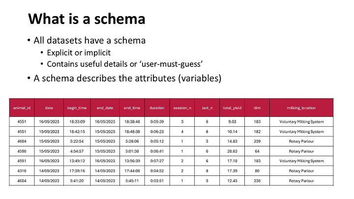
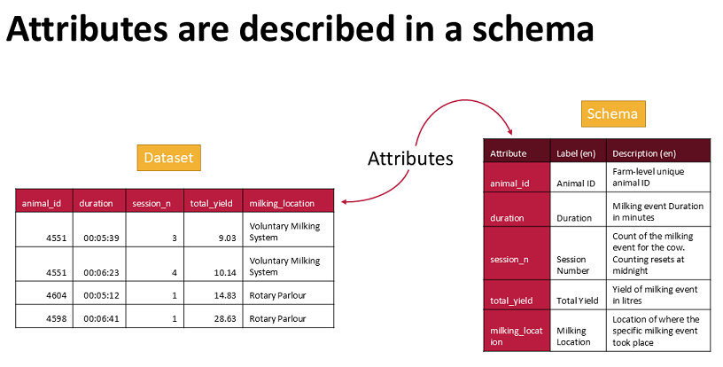
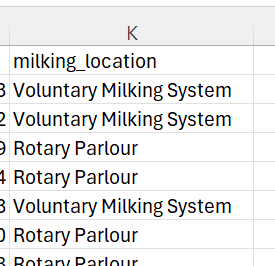
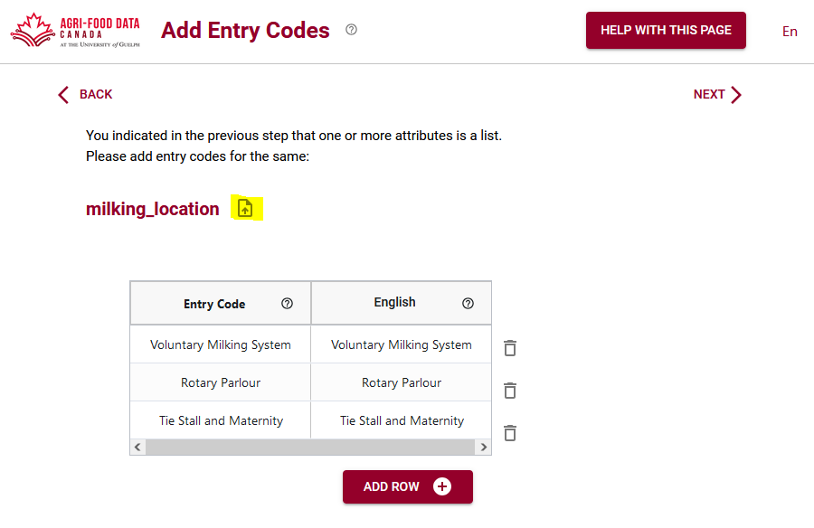
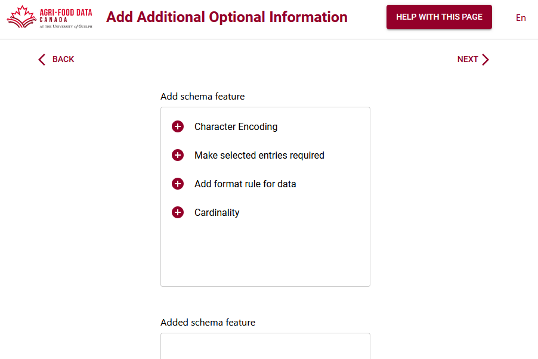

Ce tutoriel explique comment créer un schéma à l'aide du moteur sémantique. Il décrit les mêmes étapes que celles décrites dans notre tutoriel vidéo.
Tous les ensembles de données ont un schéma, implicite ou explicite. L'objectif du moteur sémantique est de prendre vos connaissances sur les données et de les documenter explicitement à l'aide d'un schéma.
Les variables ou attributs d'un ensemble de données sont décrits à l'aide d'un schéma. Un schéma comporte plusieurs fonctionnalités qui peuvent être décrites par un schéma, telles que des étiquettes et des descriptions.
Vous pouvez ajouter manuellement les attributs de votre ensemble de données au moteur sémantique, en les écrivant un par un, ou vous pouvez importer vos données dans le moteur sémantique et il lira la première ligne (et uniquement la première ligne) de votre ensemble de données et extraira les en-têtes pour créer votre liste d'attributs. Si vos en-têtes ne sont pas sur la première ligne, cette fonction d'importation ne fonctionnera pas.
Si votre ensemble de données est volumineux, vous pouvez même supprimer toutes les données en ne laissant que les en-têtes dans la première ligne. Vous pouvez ensuite importer cet ensemble de données presque vide dans le moteur sémantique et il reconnaîtra votre ligne d'en-tête et remplira automatiquement votre schéma.

En regardant les données, nous pouvons voir une colonne où il n'y a que deux entrées. Lorsque vous avez limité les entrées pour un attribut spécifique, c'est une excellente occasion de limiter la saisie de données aux seuls éléments d'une liste (que vous fournirez dans une étape ultérieure).
Sur la page du moteur sémantique, sélectionnez la feuille contenant les informations que vous souhaitez utiliser et cliquez sur Suivant. Vous recevez une brève alerte indiquant que tous les schémas doivent inclure des informations d'en-tête de base et que chaque attribut doit recevoir un type de données. Si vous ne fournissez pas ces informations, votre schéma ne sera pas analysé correctement.

Sur la page des métadonnées du schéma, vous pouvez afficher les attributs qui ont été ajoutés automatiquement, classer votre schéma et fournir un nom et une description. Vous pouvez également ajouter des langues supplémentaires à votre schéma ici.
Chaque page du moteur sémantique contient des endroits où vous pouvez trouver de l'aide. Vous pouvez survoler l'un des ? pour trouver plus d'informations, et une aide plus approfondie est disponible sur le bouton « Aide avec cette page ».

Sur l'écran suivant, vous pouvez ajouter des détails sur vos attributs, marquer les données qui pourraient être sensibles, fournir des unités, ajouter les types de données requis et où vous souhaitez restreindre les données saisies aux valeurs que vous fournissez dans une liste que vous pouvez cocher.

Les codes d'entrée (listes) vous permettent de limiter vos entrées de données à celles que vous fournissez ici. Vous pouvez télécharger vos codes d'entrée sous forme de fichier .csv ou les copier à partir d'un autre attribut de votre schéma si vous avez plusieurs listes. Vous pouvez également télécharger un autre schéma et réutiliser une liste qui figurait déjà dans le schéma.
Pour un exemple de codes d'entrée par rapport aux étiquettes, vous pouvez consulter cette liste de codes du CRSNG qui contient des numéros et des étiquettes. Vous pouvez également suivre un autre exemple de codes d'entrée dans notre billet de blog.
Ensuite, vous pouvez ajouter des attributs et des étiquettes à votre schéma. Souvent, votre étiquette sera la même que votre attribut, mais vous avez la possibilité d'écrire une étiquette un peu plus déroutante pour aider les gens à comprendre. Les étiquettes sont vraiment utiles lorsque vous souhaitez présenter l'ensemble de données dans plusieurs langues, vous pouvez alors ajouter des étiquettes pour chaque langue dans votre schéma. Les descriptions sont l'endroit où vous pouvez vraiment aider les autres utilisateurs à comprendre votre ensemble de données, surtout lorsque vous l'écrivez pour qu'il soit compris par quelqu'un en dehors de votre domaine de recherche. Lisez notre article de blog pour en savoir plus sur les étiquettes et les descriptions.

Il existe de nombreux ajouts facultatifs que vous pouvez apporter à votre schéma, appelés superpositions. Le bouton « Aide avec cette page » peut les décrire plus en détail.

La superposition de format est une fonctionnalité particulièrement importante que vous devriez envisager d'ajouter à votre schéma. Ici, vous pouvez ajouter des règles sur le format dans lequel vos données sont censées être, comme la date qui doit être AAAA-MM-JJ, etc. Cela est très utile et important si vous souhaitez vérifier vos données avant de les utiliser pour l'analyse. Les règles peuvent être lues par un vérificateur de données et vos données peuvent être évaluées pour détecter d'éventuelles erreurs.
Après avoir suivi toutes ces étapes, vous avez la possibilité de revoir tout ce que vous avez ajouté à votre schéma. Vous pouvez revenir en arrière pour apporter des corrections ou continuer et exporter et télécharger vos schémas.
Le moteur sémantique fournit deux versions de votre schéma, la très importante version lisible par machine au format .json (conservez-la dans ce format) et le format readme.txt lisible par l'homme et archivable. Conservez votre .json car vous pouvez recharger cette version dans le moteur sémantique et l'utiliser avec de nombreux outils qui ont été créés, comme la création d'une feuille de calcul Excel de saisie de données ou la vérification de vos données selon les règles du schéma.